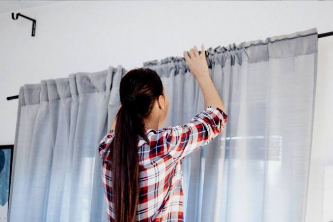

Artikel Terbaru Yeny Gorden
Memilih Gorden yang Tepat untuk Ruang Tamu Minimalis

Ruang tamu minimalis memerlukan perhatian khusus dalam pemilihan gorden agar tidak terkesan sempit atau ramai. Dalam artikel ini, kami akan membahas tips dan trik memilih gorden yang fungsional sekaligus estetik untuk ruang tamu minimalis Anda...
Baca SelengkapnyaTren Warna Gorden 2025: Apa yang Sedang Populer?

Setiap tahun, tren warna untuk interior rumah selalu berubah. Tahun 2025 membawa beberapa warna menarik untuk gorden yang bisa Anda pertimbangkan. Mulai dari warna netral yang menenangkan hingga sentuhan warna berani yang bisa menjadi statement...
Baca SelengkapnyaCara Merawat Gorden agar Tetap Awet dan Bersih
Gorden adalah investasi yang dapat meningkatkan keindahan rumah Anda. Agar tetap terlihat prima dan tahan lama, perawatan yang tepat sangatlah penting. Berikut adalah panduan lengkap cara membersihkan dan merawat gorden berbagai jenis bahan...
Baca SelengkapnyaTips Mengukur Kebutuhan Kain Gorden dengan Rumus Yeny Gorden
Salah satu pertanyaan yang sering diajukan adalah bagaimana cara menghitung berapa banyak kain yang dibutuhkan untuk gorden. Di Yeny Gorden, kami memiliki rumus sederhana yang bisa Anda gunakan untuk mendapatkan perkiraan yang akurat: (Lebar Kusen + 0.2) * 3 = Total Meter. Rumus ini cocok untuk gorden dan vitrase, memastikan Anda mendapatkan hasil yang bergelombang indah dan mewah. Mari kita bahas lebih lanjut cara mengaplikasikannya...
Baca Selengkapnya